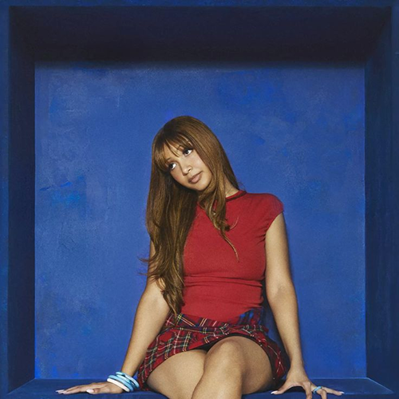
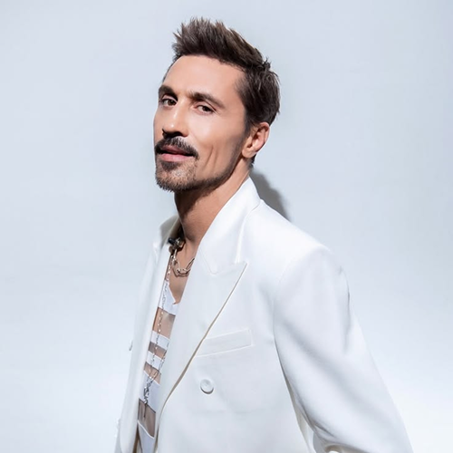
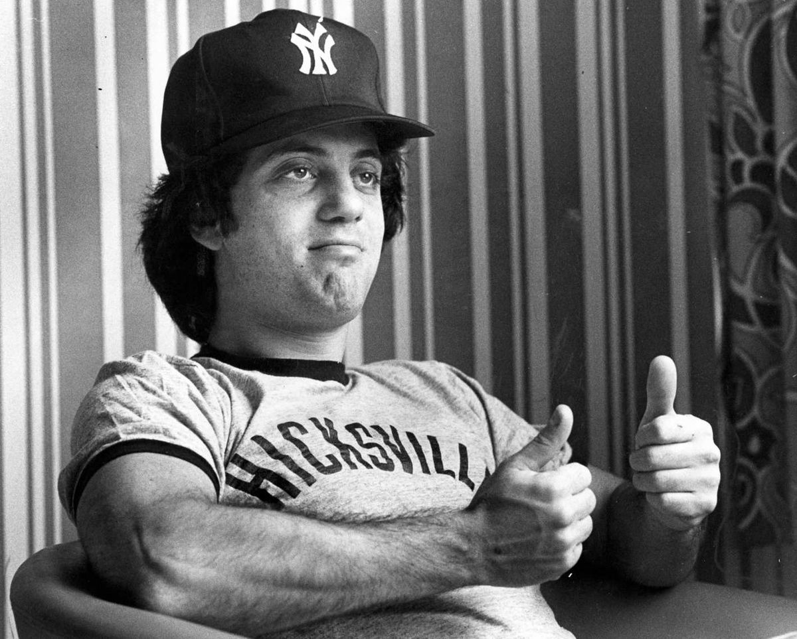
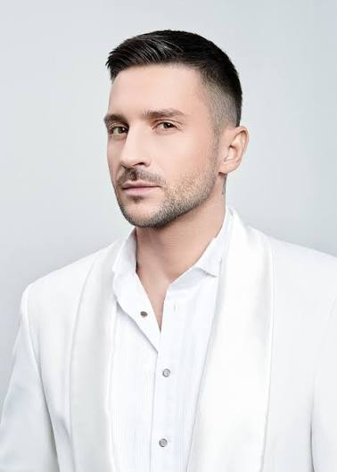

Billy JoelBilly Joel
Билли Джоэл — американский певец, пианист и композитор, родившийся 9 мая 1949 года в Нью-Йорке. Известен сочетанием поп-музыки, рока и элементов джаза. Благодаря характерной манере исполнения и игре на фортепиано получил прозвище «Piano Man».
Широкую известность музыканту принесла песня «Piano Man», выпущенная в 1973 году. Одним из наиболее успешных альбомов стал «The Stranger» (1977), в который вошли композиции «Just the Way You Are», «Vienna» и «She's Always a Woman».
За свою карьеру Билли Джоэл выпустил множество известных песен, среди которых «Uptown Girl», «We Didn't Start the Fire» и «New York State of Mind». Его творчество оказало значительное влияние на поп- и рок-музыку, а сам исполнитель стал одним из наиболее узнаваемых американских музыкантов своего поколения.

Сергей ЛазаревСергей Лазарев
Сергей Лазарев — российский певец и актёр, родившийся 1 апреля 1983 года в Москве. Начал музыкальную карьеру в дуэте Smash!! вместе с Владом Топаловым, а в 2004 году занялся сольным творчеством.
В 2005 году выпустил дебютный альбом «Don't Be Fake». Известен песнями «В самое сердце», «Это всё она» и «Сдавайся». Дважды представлял Россию на «Евровидении» — в 2016 и 2019 годах, оба раза заняв третье место.